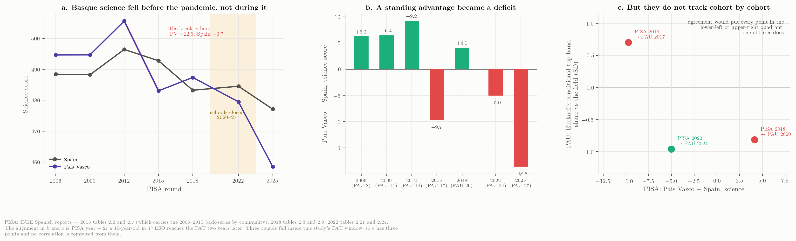
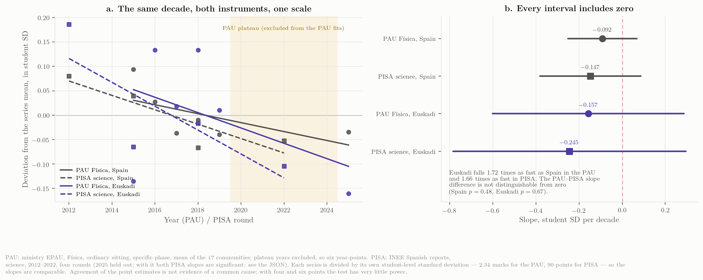
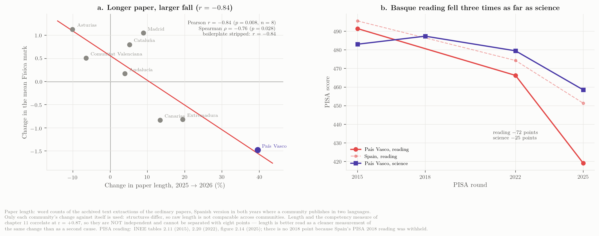

Interpretation and the 2027 question
Which explanations survive the evidence, what would decide between the rest, and what to ask for
The hypotheses, one by one
The evidence assembled in Chapters 2–5 is observational and the exam changes every year, so nothing below is a causal estimate. But the hypotheses that circulated in July can be sorted by what the data allow.
H1 — “The competency model (RD 534/2024) is to blame.” Explains 2025, not 2026. The model was applied in all seventeen communities in both years. In 2025 the Física mean fell in 14 of 17, by \(-0.81\) on average — Euskadi’s \(-0.62\) was below the national move. In 2026 at least six of nine reporting communities rose by \(+0.5\) to \(+1.1\) under the same model; Euskadi fell \(-1.48\). A national cause cannot produce opposite signs in the same year. The Basque institutions’ July framing (“el nuevo enfoque competencial pasa factura”) is therefore at most a description of 2025. There is a further difficulty with it: the only systematic rating of PAU papers’ competency orientation, covering six communities over 2015–2025 (Sánchez-Tarazaga & Gimeno Rovira, 2026), places País Vasco and Cataluña at the top of the range before the reform, so the Basque papers did not “become competency-based” in 2025 — they were already the most competency-oriented in Spain, and Cataluña, rated alongside them, rose in 2026.
H2 — “The 2026 Basque Física paper was harder, or differently pitched, than its own 2025 paper and than other communities’ 2026 papers.” Consistent with everything. The cohort-wide displacement of the distribution (Chapter 4), the confinement of the damage to Física and Matemáticas II with Química, Biología and Lengua unaffected (Chapter 5), the Catalan mirror image (Física up, Matemàtiques down, same authority, same cohort) and the Canarian coordinators’ own reading of their milder 2025 all point to the paper — its problems, its optionality (two of four problems with no choice in 2026), its marking scheme — as the first-order variable. The July package already noted that the 2026 ordinary paper’s gravitational problem contains a validity issue in its energy comparison. A structured content audit of the 2025 and 2026 papers of the nine communities with a 2026 result was carried out on 19 September and is reported in The papers themselves: none of the six rising communities increased the competency content of its paper (five stayed at zero or fell; Castilla-La Mancha added one obligatory contextualised item), while the Basque paper moved from one competency exercise to half the marks, halved its optionality and changed format at the same time — it is the only paper in the set that changed genre between the two years. The comparison with the 2010–2024 Basque papers is in Sixteen years of one paper: the 2025 break (no theory questions, new structure, first numerical penalties) was absorbed better than the national average; the 2026 step (competencial half, choice halved, −0.1 list and symbolic-first, syllabus opened) is the one the grades react to. An item-level analysis of the 2026 scripts is the natural continuation.
H3 — “Tribunals marked more severely.” Possible, unmeasured, and acknowledged by EHU. The rector’s press conference reported “significant variation between evaluation panels” in Física among other subjects (Argia, 2026), and the 6 July deck published tribunal-mean ranges for Euskara (2.88–4.43), Lengua (5.80–6.92) and Inglés (6.65–7.56) but not for Física. Rater-severity effects of the size needed to move a subject mean by more than a point are not unknown in Spanish PAU marking (Veas & López-Pina, 2025), but the cohort-wide shape of the 2026 distribution says severity, if present, was general rather than confined to a few panels. Only the tribunal-level Física table settles this.
H4 — “The cohort was weaker or differently composed.” Weak inside the PAU data, stronger outside it. The recruitment version fails outright (below) and the PAU shows no drift; but an externally marked instrument shows Basque science falling from +9 points above Spain to −5 over the decade, breaking in 2015 (below). Presentation fell 6 % from 2025 and enrolment is unpublished, so a small compositional component cannot be excluded, but the school marks of the preceding cohort were 7.09 with 98 % passing, and the same students’ Química and Biología marks did not move. A weaker cohort does not fail Física and Matemáticas by 1.5 points while holding Química. What the conditional measure adds is narrower and concerns the top of the distribution only.
Is the drift real?
H4 is usually posed as a claim about one cohort, but it has a slower version worth testing separately: that the students presenting for Física arrive a little less prepared each year, so that part of 2025 and 2026 is the end of a long drift rather than an event. The mechanism is concrete. Física is voluntary, its examined population grew 30 % over this decade — from 37,661 to 49,010 — and a subject that recruits more widely should be recruiting further down the distribution.
The counts matter here more than usual, and an earlier version of this section got them wrong. Física appears in both phases until 2016 and only in the specific phase from 2017, so counting the specific phase alone understates 2015 and 2016 by about 18 % — 30,839 against a true 37,661 in 2015. Those two years then present as small-cohort years that happen to have high means, and a dilution effect appears which is not there. Every count below is pooled across phases.

Three tests. The two that can see composition find nothing, and the one that appears to support the intuition cannot tell students from papers.
The pre-COVID years do decline, at \(-0.071\) points a year with \(R^2 = 0.75\) (\(p = 0.058\)) — five points falling steadily, which is what the intuition predicts. But the decline did not continue: extrapolated to 2025 that trend projects a mean of 5.20, and the actual 2025 mean is 5.67, \(+0.47\) above it. Whatever was pulling the mean down between 2015 and 2019 either stopped or was offset.
The dilution mechanism is not detectable at all, and this is where the count correction bites. On the undercounted series it looked real and modest — \(r = -0.212\), \(p = 0.032\) — which is what an earlier version of this section reported. On the pooled counts it disappears: \(r = -0.064\), \(p = 0.525\) over the same 102 non-plateau region-years. The entire apparent effect was two mislabelled years.
Panels b and c of Figure 1 test it on the variable that actually corresponds to the mechanism. Raw cohort size confounds a community whose whole candidate population grew with one in which a larger fraction chose Física; only the second is composition. Using Lengua Castellana y Literatura II — compulsory in the general phase, hence a count of candidates — as the denominator, take-up is the share of a community’s PAU candidates sitting Física. It has barely moved: 0.222 in 2015, 0.241 in 2025, a rise of 8 % in relative terms across a decade. And within a community it is unrelated to the mean: \(r = -0.020\), \(p = 0.839\). Física is not visibly recruiting further down the distribution, because it is not visibly recruiting more widely at all.
And the shape measure shows nothing either. The conditional top-band share has no significant trend across the non-plateau years (\(-0.0029\) a year, \(p = 0.082\)), which is where a recruitment effect should show first and most clearly.
The honest summary is that the drift is not visible on any measure that can see composition, and that the one measure suggesting a fall — the 2015–19 trend in the mean — cannot distinguish students from papers. The reason is visible in panel a of Figure 1 and is the same obstruction that produced the reference-frame problem: the five years in the middle of the decade are the plateau, and they are unusable for estimating a slow trend. Six year-points remain to fit a decade. That is why none of these tests is decisive, and it is a better reason to withhold judgement than any of the individual \(p\)-values — a drift of \(-0.07\) a year would need about fifteen clean years to separate from noise, and this decade contains six.
One consequence for the reading of 2026: a slow drift and a one-year event are not competing explanations here. The composition channel, which is the one that could have been measured, contributes nothing detectable, and the pre-2019 decline in the mean — the only surviving evidence of a drift — is confounded between the students and the paper in exactly the way this chapter cannot resolve from PAU data alone.
A Basque signal that arrives a year early
The conditional ratio of Figure 6 turns up something none of the level-based figures did. Measured against the common locus, and then against the field in the same year, Euskadi’s share of top-band students among its passers sat +0.64 SD above the other communities on average across 2016–2023 — the Basque cohort reliably produced more high marks than its own mean would predict. In 2024 that reverses to \(-0.96\) SD relative to the field, and in 2025 it is still \(-0.52\).
Two things make this worth recording. It is not a single point: it is a two-year turn away from eight consecutive years on the other side. And it predates both candidate causes — it begins in 2024, a year before the competency model of RD 534/2024 was applied and two years before the 2026 paper.
The natural reading is the one about the cohort: that the top of the Basque Física cohort had begun to thin before anything changed in the examination. The school record complicates it rather than confirming it. The 2024–25 Bachillerato Física cohort scored 7.09 with 98 % passing, so whatever the exam was detecting, school assessment was not — and the gap between school and PAU marks widens from 1.62 in 2025 to 3.10 in 2026 on unchanged school marks. Either school assessment is not tracking the competence the PAU tests at the upper end, or the PAU stopped rewarding it. The ratio cannot distinguish those, because a thinner top tail and a paper that discriminates less at the top produce the same signature.
What it does establish is that the Basque series was already moving in 2024 on a measure that the mean, the pass rate and the 8–10 share all missed — each of those was unremarkable that year. That is an argument for adding the conditional ratio to the routine monitoring proposed below, and it is an argument against treating 2026 as the beginning of the story.
An instrument the Basque tribunals do not mark
The ambiguity above — a thinner top tail or a paper that stopped rewarding it — is not resolvable from the PAU, because the PAU produces one number for both. It needs an instrument that measures the same students and is marked elsewhere. PISA is that instrument, and the cohorts can be matched exactly: PISA tests 15-year-olds, modal 4º ESO, who reach the PAU two years later.
That alignment also says what cannot be done. Only three PISA rounds fall inside this study’s PAU window — 2015 → PAU 2017, 2018 → PAU 2020, 2022 → PAU 2024 — and two of the three land in the marking plateau. A PAU–PISA correlation would be three points with two contaminated, and none is attempted here. What is available is one aligned cohort, compared on the one quantity both instruments measure at the same place in the distribution: PISA’s proficiency levels 5 and 6 are the top of its scale as the 8–10 band is the top of the PAU’s.

The long series settles the question the two-round version could not, and it settles it against the reading offered here in an earlier draft. Across 2006, 2009 and 2012 the Basque science score ran +6.2, +6.4 and +9.2 points above Spain. Between 2012 and 2015 it fell 22.6 points while Spain fell 3.7, and it has not recovered: \(-9.7\) against Spain in 2015, \(+4.1\) in 2018, \(-5.0\) in 2022. Over the decade to 2022 the Basque fall is 26 points against Spain’s 12.
The break is in the 2015 round — administered five years before the schools closed. An earlier version of this section read only 2018 and 2022, found the Basque top tail thin in 2022, and attributed it to the pandemic cohort. That was wrong, and wrong in a way that mattered: it was offered as a reason to discount the slow-drift reading, and the earlier rounds show the opposite. A standing Basque advantage in science became a deficit a decade ago, on an instrument marked outside the Basque system, and stayed one.
The top of the distribution tells the same story without a trend. The Basque share at proficiency levels 5–6 in science runs 3.25 % in 2015, 3.87 % in 2018 and 3.32 % in 2022, against Spanish figures of 4.98 %, 4.18 % and 4.92 %. There is no progressive thinning: 2015 is as low as 2022. What there is, is a level that has sat below Spain’s in two rounds of three and below the OECD’s (7.47 % in 2022) in all of them.
But the cohorts do not line up. This is the second correction, and it undoes the triangulation this section originally claimed. Of the three PISA rounds that map onto a PAU year inside the study window, only one agrees with the PAU conditional measure:
| Cohort | PISA gap vs Spain | PAU conditional vs field | |
|---|---|---|---|
| PISA 2015 → PAU 2017 | \(-9.7\) | \(+0.70\) SD | disagree |
| PISA 2018 → PAU 2020 | \(+4.1\) | \(-0.82\) SD | disagree |
| PISA 2022 → PAU 2024 | \(-5.0\) | \(-0.96\) SD | agree |
One of three is what chance produces. The 2022/2024 match, which this section was originally built around, is not evidence of a cohort mechanism; it is the one case out of three in which two noisy measures happened to point the same way.
What survives is worth more than what was lost, and it supports the drift reading rather than the event reading. There is a real, large and sustained deterioration in Basque science attainment beginning in 2015, visible to an external instrument, which the PAU Física series does not show — Euskadi’s Física mean sits near its own baseline through 2024. Two conclusions follow. The PAU is not a good detector of whatever PISA is measuring, which is unsurprising given that Física is sat by a self-selected quarter of the cohort. And the slow-drift version of H4, which the previous section could not find in the PAU data, is clearly present in the schooling that precedes it. Those are compatible: a decade-long weakening of the base need not show in a subject whose takers are drawn from the top of it.
Do the two instruments fall at the same rate?
The cohort test above compares single years and finds noise. A gentler question is whether the two series, taken whole, descend at the same rate — whether Figure 1’s panel a and Figure 2’s panel a are parallel. That is a better question than whether they correlate, which three overlapping points cannot answer, and it turns out to have a more interesting answer than the cohort test did.
It needs a common scale. Each series is divided by its own student-level standard deviation: 2.34 marks for PAU Física, the median of the thirteen published regional standard deviations and consistent with the Beta fits of Chapter 4; about 90 points for PISA science, from the p10–p90 spread of the 2015 tables. A slope in standard deviations per decade is then the same quantity on both instruments.

| Series | Slope, SD per decade | 95 % interval |
|---|---|---|
| PAU Física, Spain | \(-0.092\) | \([-0.251,\ +0.068]\) |
| PISA science, Spain | \(-0.147\) | \([-0.381,\ +0.086]\) |
| PAU Física, Euskadi | \(-0.157\) | \([-0.601,\ +0.286]\) |
| PISA science, Euskadi | \(-0.245\) | \([-0.785,\ +0.296]\) |
The point estimates are strikingly consistent. All four decline; the PAU and PISA slopes for the same population differ by \(+0.06\) and \(+0.09\) SD per decade, differences that no test could distinguish from zero (\(p = 0.48\) and \(p = 0.67\)). And the relative figure is closer still: Euskadi falls 1.72 times as fast as Spain on the PAU and 1.66 times as fast on PISA. Two instruments with nothing in common — different ages, different subjects, different markers, different scales — put the Basque disadvantage at the same multiple of the national one.
That is worth stating because it tempers a claim made in the previous section. There it was said that PISA shows a deterioration the PAU Física series does not. On cohorts that stands, and the matching is one of three. On trend it overstates: the PAU does decline, at a rate whose point estimate sits comfortably inside PISA’s interval, and the reason it looked absent is that the plateau hides it in the raw series and the six surviving year-points cannot make it significant.
The honest summary is the one panel b is drawn to make unavoidable: every interval includes zero. With four PISA rounds and six usable PAU years, these data are consistent with two instruments measuring one common decline at the same rate — and equally consistent with no decline at all in either. The agreement of four point estimates, and of two independently computed ratios to within 4 %, is the kind of coincidence that is worth recording and is not worth believing on its own. It is a reason to keep measuring both, which is the recommendation of the next section, rather than a finding.
How much of the paper is reading?
The author of this study was involved in setting the 2026 Basque Física paper, and specifically chose to expand the statement of its second exercise — spelling out each requirement and repeating it — because a competency-style saber básico was entering the examined set for the first time. That account is the origin of the hypothesis tested in this section, and it is first-hand evidence no amount of text analysis could have supplied: it establishes that the length was deliberate rather than accidental. It also means this section examines a decision its author made. The provenance note in Methods records the same fact.
Every section so far has treated the paper as a single variable — harder or easier, more or less competency-oriented. It has another dimension that is objective, easy to measure and so far unexamined: how much text a candidate must read before answering. The competency reform pushes in exactly that direction, because contextualised items carry a scenario and the scenario has to be written down.
That matters more if the cohort’s reading has weakened, and the Basque cohort’s has, far more than its science. Over the decade to 2025 the País Vasco PISA reading score falls 72 points, from 491.4 to 419.1, against a science fall of 24.5. The gap to Spain widens from \(-4.1\) to \(-32.2\). Whatever else is true of these students, reading is where they have lost most ground. (There is no 2018 point: the Spanish PISA 2018 report contains mathematics and science only, because the OECD withheld Spain’s 2018 reading results over anomalous response patterns.)

The association is the strongest this study has found between any property of a paper and the movement of its grade: \(r = -0.84\), \(p = 0.008\) across the eight communities with both a 2026 result and an archived pair of papers, and \(\rho = -0.76\), \(p = 0.028\) on ranks. Stripping rubric and constant tables from the word counts leaves it unchanged at \(-0.84\). Asturias and the Comunitat Valenciana shortened their papers and rose; Extremadura, Canarias and País Vasco lengthened theirs and fell. The Basque paper lengthened 39.5 %, from 1,452 words to 2,026, and fell furthest.
Three cautions, and the second is the one that matters.
The word count includes everything on the page, and papers that offer more choice print more text for the same student workload. That is why only within-community change is used, and it is why Madrid’s 4,070 words sit unremarked next to Asturias’s 899.
Length and competency content are not independent. The competency measure of The papers themselves correlates with the length change at \(r = +0.87\). Contextualised items are longer items, so the two are largely one signal seen twice, and with eight points they cannot be separated. What length adds is not a second cause but a better instrument: it is a count, reproducible by anyone with the PDFs, where the competency coding is a judgement made by one reader. That the objective measure correlates twice as strongly with the outcome (\(-0.84\) against \(-0.47\)) is a reason to prefer it as the measurement, not a reason to believe a new mechanism.
And the interaction that motivated the section — long papers hurting weak readers more than strong ones — is not tested here. Testing it needs the reading level of each community crossed with its length change, and with eight communities an interaction term would be fitting noise. It remains a hypothesis, and a cheap one to settle: the 2027 paper could be set with its statement length recorded, and the Basque reading collapse means that number now carries more weight than it did.
What PISA 2025 says about PAU 2027
PISA 2025 was published on 8 September 2026, eleven days before this chapter was written, and science was its major domain. It is the cohort that sits the PAU in 2027, so for the first time in this study a genuinely forward-looking measurement exists, and it is worth asking what estimate it supports.
The measurement itself is severe. Basque science falls to 458.5, against a Spanish 477.1 and an OECD 481.9. The gap to Spain, which was \(+9.2\) in 2012 and \(-5.0\) in 2022, is now \(-18.6\) — the largest in the series and more than double the previous worst. At the top of the distribution the Basque share at levels 5–6 halves, from 3.32 % to 1.83 %, against a Spanish figure that holds near 4.2 %. On the instrument that does not depend on Basque marking, the cohort now sitting in 1º Bachillerato is the weakest this series has recorded.

Converting that into a PAU estimate is arithmetic, and the arithmetic is what makes the answer honest. The Basque PISA fall of 21.0 points is \(0.233\) of a student standard deviation; transferred one-for-one to the PAU — the relation figure 22 could neither reject nor establish — and prorated over the two years separating the PAU 2025 and PAU 2027 cohorts, it is a cohort term of \(-0.36\) marks.
Set that against what else moves the number. The standard deviation of Euskadi’s own year-to-year change in the Física mean, excluding 2026, is 0.855 marks; over two years the 95 % band on that alone is \(\pm 2.37\). The cohort term is 6.5 times smaller than the band it has to be read against. And 2026 itself moved the mean by \(-1.48\) in a single year on a changed paper — four times the cohort term, and more than the whole decade of PISA drift converted the same way (\(1.23\) marks from 2012 to 2025).
So the estimate exists and is this:
| If the 2027 paper resembles | Central estimate | 95 % band from the paper term alone |
|---|---|---|
| the 2025 paper | 5.11 | \([2.74,\ 7.48]\) |
| the 2026 paper | 3.63 | \([1.26,\ 6.00]\) |
The two scenarios differ by 1.48 marks, which is the size of the 2026 event; the cohort contributes 0.36 to both. That is the finding, and it is not the one the question was hoping for. PAU 2027 is not something PISA predicts. It is something the 2027 paper and its marking scheme decide, with the cohort supplying a slow downward nudge an order of magnitude smaller than the choice. A forecast whose interval spans 2.7 to 7.5 is not a forecast; it is a restatement that the exam is the dominant variable.
Two things follow that are worth acting on rather than reading. The cohort term, small as it is, points the same way as every other measure in this section, so the sensible default for 2027 is that the intake will be slightly weaker than 2025’s and considerably weaker than the decade’s average — which argues for the paper being set with that in mind rather than against a remembered cohort. And the honest use of PISA 2025 here is not prediction but attribution after the fact: when the 2027 result arrives, the \(-0.36\) is the part that should not be blamed on the paper, and everything beyond it is the part that should be explained.
That round has since been published, and the section below reads it.
H5 — “Students under-prepare Física because the weighting rules make it dispensable.” Plausible as a slow driver, not as a 2026 trigger. This is the Canarian coordinators’ hypothesis for their own decline (few degrees need a high Física mark; Matemáticas II carries the weighting; Física is examined last on a long day). It fits the ten-year erosion of the top decile better than a one-year fall of 1.5 points, and it is the hypothesis most directly addressable by the Basque ponderación table and the exam timetable for 2027.
H6 — “Language or network bias.” No evidence either way for Física. The 2010–2022 series shows euskera/castellano differences of a few tenths in both directions and no sign that either network fails Física differentially; EHU’s 2026 bias analysis was run for Euskara II. Nothing published for Física 2026 speaks to this.
The ranking that emerges is H2 first, H3 unresolved and testable, H5 as background, H1 as a description of 2025 only, and H4 and H6 unsupported.
Was 2026 a shift or a change of shape?
The hypotheses above divide along a line the published aggregates can be made to test. A harder paper or a uniformly stricter marking scheme moves the whole distribution down together. A change in who sits the exam, or a marking change that bites only at the bottom, changes its shape — it thins the pass region without touching the top, or the reverse. The published data carry three summaries of the same distribution — the mean, the pass rate, and the share in the 8–10 band — and the second and third are near-deterministic functions of the first: across seventeen communities and eleven years the correlations are \(r = 0.974\) and \(r = 0.961\). A scatter of pass rate against mean therefore mostly redraws arithmetic. What carries information is the residual: a cohort sitting off the common locus has a differently shaped distribution, not merely a lower one.

Two things follow, and the first is a precondition for the second.
The locus is a property of the marking scale, not of the cohort. Física’s examined population changed substantially inside this window: until 2016 it could be taken in the general phase, from 2017 LOMCE left it voluntary only, and the number presented grew by 30 % — from 37,661 to 49,010, pooled across phases. If the mapping from mean to pass rate depended on who sits the paper, it should step at that boundary. It does not: comparing residuals before and after 2017, the pass panel gives \(p = 0.40\) and the top-band panel \(p = 0.12\) once the two COVID sittings are excluded. On the full series the top-band difference does reach \(p = 0.008\), but that result is carried by 2020, whose residual of \(+3.6\) pp is the largest in the panel, and it is the COVID year — so the honest reading is the conservative one. In Figure 6 the hollow 2015–16 markers interleave with the later ones along the same curve. That stability is what licenses reading a 2026 point off the locus at all.
Where 2026 can be observed, it is a location shift — but the test is weaker than it looks. The only 2026 cohorts with a published histogram are the two Canarian universities, and both land on the locus: ULL at \(-0.08\) SD on the pass panel and \(+0.65\) SD on the top band, ULPGC at \(-1.04\) and \(+0.24\), against a historical scatter that reaches \(\pm 3.5\) SD. Their distributions are the same shape as everyone else’s at that mean — simply further down it. Nothing was thinned selectively: the top of the Canarian cohort fell with the rest.
How much that settles depends on how much evidence sits where these cohorts fall, and the answer is honestly very little. The 187 region-year means pile up between 5.0 and 6.5 — they are themselves right-skewed and heavy-tailed rather than normal (skew \(+0.60\), excess kurtosis \(+0.88\); Shapiro–Wilk \(p = 0.00017\), Anderson–Darling \(A^2 = 2.06\) against a 5 % critical value of \(0.77\)). Only 2 of 187 sit below 4.5 — the tinted strip in panels a and b of Figure 6 — and none within \(\pm 0.25\) of where ULL (4.08) and the Basque cohort (3.99) fall. The curve there is therefore an extrapolation from the body of the data, and its own 95 % interval is \(\pm 1.41\) pp at mean 4.08 against \(\pm 0.32\) pp at mean 6.0, which is why the figure draws that interval as well as the flat scatter band. ULL’s residual of \(-0.16\) pp sits comfortably inside the uncertainty of the very curve it is measured against.
The columns are also not equally well-behaved, and panels d, e and f of Figure 6 separate them because they give different answers. The pass rate is symmetric and close to normal (skew \(+0.01\), excess kurtosis \(+0.39\); Shapiro–Wilk \(p = 0.096\), Anderson–Darling \(A^2 = 0.58\), below the critical value — normality cannot be rejected). The 8–10 share is not (skew \(+1.29\), \(A^2 = 5.80\)), and neither is the conditional ratio (skew \(+0.98\), \(A^2 = 3.90\)). Right-skew is what one should expect of a tail quantity pressed against zero, but it has a practical consequence: a residual quoted “in standard deviations” assumes roughly symmetric scatter, so the SD units are trustworthy on the pass panel and only indicative on the other two. Those residuals should be read as directional, not as calibrated probabilities.
The third column settles the question the first two could not. A uniform shift of the whole distribution moves the pass rate and the 8–10 share together, so a cohort sitting on both loci is consistent with a shift but does not demonstrate one — the two measurements are not independent tests. The conditional ratio is the quantity that distinguishes them, and on it the two observed 2026 cohorts sit above the locus, not below: ULL at \(+1.05\) SD and ULPGC at \(+0.53\) SD. Among the students who passed in Canarias in 2026, the top band is if anything slightly better represented than their mean predicts. Whatever happened there did not thin the top of the cohort relative to its middle, which is the first measurement in this sequence to strengthen a conclusion rather than qualify it.
The consequence is a limit on power, not a reversal of sign. Nothing in the 2026 data indicates a change of shape, and a large one would still have shown: a cohort that had thinned only at the bottom would sit several points off the curve, far outside even the widened interval. But a modest reshaping at mean 4 could not be detected with two historical neighbours, so “consistent with a pure location shift” is the correct reading, and “demonstrated to be one” is not.
That bears on the ranking above in one direction and one only. It is evidence against H4: a cohort that had become differently composed would be expected to sit off the locus, and Canarias does not. It does not discriminate between H2 and H3, because a harder paper and a uniformly severer marking scheme produce the same signature here — both move the distribution without reshaping it. What it weighs against is any mechanism acting strongly and selectively on one part of the range.
The Basque case cannot be put to this test with what is published. The 2026 band shares shown in Chapter 4 are output of the Beta fitted to the mean, the pass rate and the zero count; plotting them here as evidence would be circular, which is why the EHU 2026 marker in Figure 6 is drawn hollow. Its apparent residual of \(-0.05\) SD on the top band is the model agreeing with itself and should not be read as a result. Resolving the Basque case the same way needs one thing: the observed 2026 grade histogram, which is item 2 of the data requests below.
One data caveat surfaced in building this. The Ministry’s own cube is internally inconsistent for two of the 187 region-years — Galicia 2015 and 2016 — where the published pass rate and the published \([0,5)\) share disagree by 5.64 and 4.48 pp; these are the two years in which Física appeared in both phases, so the cells are carried on different bases. Every band row sums to 100.0 and the remaining 185 agree to rounding, so the two points are kept rather than discarded, and they are recorded in data/analysis/shape_locus.json.
What you compare against decides what you find
Every number in this report is a change measured from some reference point, and the reference point is almost never argued for. It is usually the previous year, because that is what the sources publish and what the press quotes. Reading the same series against a different baseline does not merely adjust the size of the effect — in this case it reverses the sign of the national story.

The pattern in panel a of Figure 7 is not a decline. It is a plateau that ended. The nine communities sit +0.4 to +1.0 above their pre-COVID baseline in every year from 2020 to 2024, peaking in 2021, and then return to it in 2025. The relaxation did not decay gradually, which is what “returning to normal” would look like; it held for three full years after the peak — 2022, 2023 and 2024 are all about +0.65 — and then ended in a single step. Whatever produced the COVID-era marking regime was still producing it in 2024, and stopped in 2025.
It was also not a uniform lift. The conditional measure of Figure 6 makes that precise: among students who passed, the share reaching the 8–10 band ran \(0.353\) across 2015–2019, rose to \(0.466\) through the plateau (\(t = 7.14\), \(p = 4 \times 10^{-11}\)), and came back to \(0.331\) in 2025, statistically indistinguishable from the pre-COVID years (\(p = 0.30\)). A regime that simply moved every mark up by two-thirds of a point would have left that ratio roughly where it was; instead it enriched the top band among passers by about a third. The COVID-era leniency was concentrated at the top of the scale, and the evidence that it was a change of shape is far stronger (\(p = 4 \times 10^{-11}\)) than anything this chapter can say about 2026. Panel i of Figure 6 shows the same thing from the other side: the conditional ratio’s departure from normality is largely an artefact of those five years, its Anderson–Darling statistic falling from \(3.90\) to \(0.94\) when they are removed, where the raw 8–10 share stays firmly non-normal at \(1.53\) because its skew is intrinsic.
That is enough to change the reading of three separate claims in this report.
| Measured as | Change | Invites the conclusion |
|---|---|---|
| 2024 → 2025, nine communities | \(-0.65\) | “A national collapse; the competency model bites.” |
| 2025 → 2026, nine communities | \(+0.17\) | “A recovery everywhere, so 2026 is a Basque problem.” |
| 2015–19 baseline → 2026, nine communities | \(+0.02\) | “Nothing has happened; Spain is where it was a decade ago.” |
| 2025 → 2026, Euskadi | \(-1.48\) | “The Basque fall is one and a half points.” |
| 2015–19 baseline → 2026, Euskadi | \(-1.93\) | “The Basque fall is nearly two points — a third larger.” |
Rows one and three are the uncomfortable pair. Both are true of the same nine communities and the same ministry series, and they are not reconcilable as statements of fact about “what happened to Physics in Spain”: one says the subject collapsed, the other that it is exactly where it was in 2015–2019, \(+0.02\) away after eleven years. The contradiction is entirely in the choice of reference year, and the year-on-year framing is the one that misleads, because 2024 was not a normal year to measure from.
This weakens H1 further than the hypothesis review above already did. That section could say only that the competency model explains 2025 and not 2026. Measured from the pre-COVID baseline, it does not clearly explain 2025 either: the 2025 sitting did not fall below the historical norm, it returned to it. A model introduced in 2025 that leaves the national mean 0.15 below where it sat in 2015–2019 is not obviously doing anything at all to the national mean; the visible \(-0.81\) is the withdrawal of five years of COVID-era leniency, and would have appeared in 2025 under any marking scheme that stopped being lenient.
It also makes the Basque case worse, not better. The headline everyone quoted is \(-1.48\), measured from 2025. Against Euskadi’s own pre-COVID baseline of 5.92 the 2026 fall is \(-1.93\) — a third larger than the number in circulation — because 2025 was already 0.45 below that baseline. The Basque series did not fall once; it fell twice, and only the second fall was reported as news.
None of this is a criticism of the sources. The Ministry publishes years, the universities publish years, and a year-on-year change is the only comparison most readers can make from what is published. But it means the honest form of every claim in this report carries its reference point on its face, and that the three sentences most likely to be quoted from this study — “the 2025 fall was national”, “the 2026 fall is regional”, “Euskadi fell 1.48” — are each true only in the frame that produced them.
How this reading was arrived at, and what it cost each earlier one
The previous section shows that the frame decides the answer. This one records the order in which the frames were tried, because the sequence is itself a finding: the analysis in this chapter was not assembled in one pass, and four of its six steps damaged the conclusion that motivated them.

The sequence in panel b of Figure 8 ran as follows.
Step 1 was the July framing, taken from the institutions: Física fell 1.48 points and the competency model is to blame. Step 2, the cross-section of 2026 in Chapter 3, overturned it — six of nine communities rose in 2026 under the same model, and a national cause cannot produce opposite signs in the same year. That is the step that produced this chapter’s original hypothesis ranking.
Step 3 asked whether the 2026 fall was a change of shape or of position, and answered that Canarias 2026 sits on the historical locus: the distribution moved down without being reshaped. Step 4 then asked how much evidence supports the locus where those cohorts fall, and found almost none — two region-years of 187 below mean 4.5, and a fit whose own interval there is four times its width at the centre of the data. The step-3 claim survived, but only as consistent with a location shift rather than a demonstration of one. Step 5 decoupled the two distributions and found the 8–10 share strongly non-normal, so the standard-deviation units in which the step-3 residuals had been quoted are not calibrated on that panel, and those residuals are directional only.
Step 6 re-baselined to the pre-COVID norm and did the most damage of all — not to step 3, but to step 2. Step 2’s reasoning depends on 2025 having been a national collapse that the competency model could be blamed for. Measured from 2015–2019 the 2025 sitting was not a collapse: it was a return to the norm after a five-year plateau, and the nine communities finish 2026 \(+0.02\) from where they started in 2015. So the hypothesis ranking earlier in this chapter, which demoted H1 to “a description of 2025”, now has to demote it further: there is no national 2025 anomaly for it to describe.
Step 7 conditioned on passing, and is the only step in the sequence that made a conclusion stronger rather than weaker. The pass rate and the 8–10 share are both dominated by the level, so a cohort lying on both loci was never two independent tests; their ratio is not, and on it the two observed 2026 cohorts sit above the locus. It also revised step 6 — the plateau did not merely lift the level, it reshaped the distribution, enriching the top band among passers from \(0.353\) to \(0.466\) (\(p = 4 \times 10^{-11}\)) — and it found the Basque turn of 2024 described above, on a measure the other three were blind to.
That last point is the one with a bearing on how much of this sequence was luck. The conditional ratio was not part of the original design; it was suggested late, as an afterthought to a figure that already looked finished. Had it not been tried, the 2024 Basque signal would not have been found, and the plateau would still be described in this chapter as a lift rather than a reshaping. There is no reason to think the list of measures that were never tried is now empty.
Three further things follow that are worth stating plainly, because they bear on how this report should be read rather than on what it found.
The first is that every step which narrowed the claim came from asking about the data rather than about the subject — where the observations actually lie, whether the distributions are what the summary statistics assume, what the baseline year happens to be. None of the four weakening steps required new data. They required looking at the data that was already in hand from a different angle, and each angle was one an unhurried reader would eventually have asked about.
The second is that the two surviving strong claims are the narrow ones. That Euskadi 2026 is anomalous survives every reframing and gets larger under the honest baseline, from \(-1.48\) to \(-1.93\). That the 2026 fall is confined to Física and Matemáticas II while Química and Biología held (Chapter 5) is untouched by any of this, because it is a within-cohort comparison and carries no baseline choice at all. Comparisons that do not need a reference point are the ones that did not move.
The third is the uncomfortable one. If this analysis had stopped at step 2 — which is where a competent and honest reading of the published sources naturally stops — it would have produced a coherent, quotable and partly wrong account: a national collapse in 2025 caused by the reform, and a separate Basque failure in 2026. Both halves of that sentence are artefacts of measuring from the previous year. Nothing in the published sources signals that the previous year was abnormal; the plateau is only visible once eleven years are put side by side on one axis, which no institutional publication does. That is not a failure of the sources, but it is a reason to treat any single-year comparison in this domain, including the ones in this report’s own earlier chapters, as provisional until it has been checked against a decade.
The institutional record since 6 July
- 6 July, EHU: Física figures published as a counter-example in the Euskara controversy; tribunal data handed to the Education Department; anomalous tribunal values reported for eleven subjects including Física (Argia, 2026; Euskal Herriko Unibertsitatea, 2026).
- 7 July, Science and Universities Counsellor: admits a “déficit de confianza, fundamentado o no fundamentado” in the marking system; floats multi-marker models; ≈ 40 judicial appeals by students with very low marks.
- 7 July, extraordinary sitting: 71.4 % global pass (90.6 % in 2025); no Física figure.
- 8–10 July: 12 000-signature faculty manifesto in support of markers; EHU appeals the court measures on the Euskara marks; press notes that “los ceros en Física duplican a los de Euskera”.
- 12 July, Education Counsellor Pedrosa (Alonso, 2026): the Department has only the EHU report, will request more data, will review all subjects for 2027 “a corto plazo”, has no diagnosis yet, and does not hold other communities’ data.
- 30 July, Galicia (context): after errors in three papers, the Xunta announces peer review of papers and double marking for 2027 — the single-author, no-external-review failure mode that any Basque audit should check for.
- 7 September: nothing sent to schools for PAU 2027 beyond the Euskara II instructions; “2027 será un año de ajuste técnico” and the competency model is to be fully deployed in 2028.
What to ask for, in order of value
- Física by tribunal, 2025 and 2026: \(n_j\), \(\bar{x}_j\), \(s_j\) and the school composition of each tribunal’s scripts. EHU computed this. It separates H2 from H3 in one table.
- The full Física grade histogram, 2024–2026, in one-point bands with zeros and tens, as ULL and ULPGC publish routinely. It replaces the model of Chapter 4 with data.
- July 2026 Física: presented, passed, mean. Its position relative to the June result tells whether the July paper was pitched like the June one.
- Revision statistics for Física 2026: requests, share raised, mean change. Published for four subjects, not for the subject with the lowest mean.
- Física by sex, language and territory for 2023–2026, the breakdowns the annual reports carried until 2022.
- Problem-level marks (four problems, options a/b) for a sample of scripts: this is the item-level evidence that distinguishes “the paper was hard” from “the paper was unanswerable”, and it is what the Canarian subcommittee planned for 2026.
Design questions for 2027 that the data already inform
- Optionality. The 2026 Basque paper fixed problems 1 and 2 with no alternative (optional share 75 % → 50 %; Canarias, the other community that cut choice by ≥ 25 points, also fell — Chapter 11). The COVID years (single super-option, choice among questions) produced the highest means in the series; the 2025–26 reduction of choice coincides with the two lowest. Restoring a choice within problems 1–2 is the cheapest lever with a documented effect.
- Calibration against a reference. The Ministry cube gives, for every subject, community and year, a full distribution; a target distribution for Física (for example the 2017–2024 Basque band structure, \([0,5)\) ≈ 30 %, \([9,10]\) ≈ 15 %) can be written into the coordination instructions and checked against a pre-test of the paper on a sample of Bachillerato students, as some communities’ ponencias already do informally.
- The threshold. The Canarian histograms show that in 2026 the customary rounding of borderline scripts to 5 vanished. Whether that is desirable is a policy question; that it moves the pass rate by 5–8 points is an empirical one.
- Order of exams. Física is sat on the last slot of the science day in several communities; the Tenerife minutes name this explicitly. The Basque timetable is a free parameter.
- Second marking. Galicia’s 2027 reform (double marking, external review of papers) is the model that the “déficit de confianza” language of July points toward; Veas & López-Pina’s Rasch equating in Comunitat Valenciana is the statistical complement.
None of these requires new data to be argued; all of them would be sharpened by the six items above.